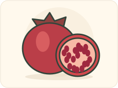
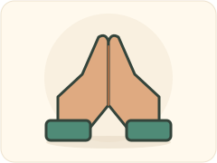
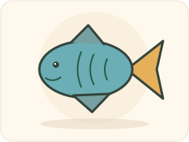
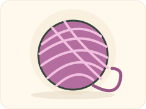
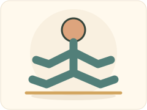

पुस्तक 01 · बाल हिंदीअक्षर से
अक्षर से
पहली कहानी तक।
चित्र देखो। शब्द सुनो। पढ़ो, बोलो और लिखो।
Preschool Hindi · A supported first readerअकआ


4भाग
40अध्याय
80पाठ
40कार्यपत्रक
मेरी प्रगति
0 / 80Saved on this device. No account needed.
माता-पिता / शिक्षक: छोटे बच्चों को चित्र, आवाज़ और बातचीत से शुरुआत कराएँ। शुरुआती वाक्य साथ पढ़ें; स्वतंत्र पठन की अपेक्षा धीरे-धीरे करें। Draft curriculum; adult guidance and Hindi educator review recommended.
विषय-सूची
Table of contentsभाग 01 · PHASE 1
अक्षर की दुनिया
पहचानें, सुनें और अक्षर बनाएँ।
Letters & sounds

01मेरी पहली हिंदी
My first Hindi2 पाठ · 1 कार्यपत्रक
पढ़ें →02
स्वर — अ से ई
Vowels A to II2 पाठ · 1 कार्यपत्रक
पढ़ें → 03
03स्वर — उ से ऐ
Vowels U to AI2 पाठ · 1 कार्यपत्रक
पढ़ें → 04
04स्वर — ओ और औ
Vowels O and AU2 पाठ · 1 कार्यपत्रक
पढ़ें → 05
05व्यंजन — क और च वर्ग
Consonants K and CH2 पाठ · 1 कार्यपत्रक
पढ़ें → 06
06व्यंजन — ट और त वर्ग
Consonants retroflex and dental2 पाठ · 1 कार्यपत्रक
पढ़ें →07व्यंजन — प वर्ग
Consonants P row2 पाठ · 1 कार्यपत्रक
पढ़ें → 08
08व्यंजन — य से ह
Remaining consonants2 पाठ · 1 कार्यपत्रक
पढ़ें → 09
09बिंदु वाले और संयुक्त अक्षर
Nukta and conjuncts2 पाठ · 1 कार्यपत्रक
पढ़ें → 10
10वर्णमाला की पुनरावृत्ति
Alphabet review2 पाठ · 1 कार्यपत्रक
पढ़ें →भाग 02 · PHASE 2
शब्दों की दुनिया
मात्राएँ जोड़ें और छोटे शब्द पढ़ें।
Words & sentences 11
11बिना मात्रा के शब्द
Words without vowel signs2 पाठ · 1 कार्यपत्रक
पढ़ें →12आ की मात्रा
AA vowel sign2 पाठ · 1 कार्यपत्रक
पढ़ें →
13इ और ई की मात्रा
I and II signs2 पाठ · 1 कार्यपत्रक
पढ़ें →
14उ और ऊ की मात्रा
U and UU signs2 पाठ · 1 कार्यपत्रक
पढ़ें → 15
15ऋ, ए और ऐ की मात्रा
RI E AI signs2 पाठ · 1 कार्यपत्रक
पढ़ें → 16
16ओ और औ की मात्रा
O and AU signs2 पाठ · 1 कार्यपत्रक
पढ़ें →17चिह्न और आधे अक्षर
Marks and half letters2 पाठ · 1 कार्यपत्रक
पढ़ें → 18
18बारहखड़ी — पहला अभ्यास
Barakhadi first practice2 पाठ · 1 कार्यपत्रक
पढ़ें →19बारहखड़ी — सभी व्यंजन
Full Barakhadi chart2 पाठ · 1 कार्यपत्रक
पढ़ें →20शब्द से वाक्य
Words to sentences2 पाठ · 1 कार्यपत्रक
पढ़ें →भाग 03 · PHASE 3
मेरा संसार
चित्रों से रोज़मर्रा के शब्द सीखें।
My world
 21
21रंग
Colours2 पाठ · 1 कार्यपत्रक
पढ़ें →22फल
Fruits2 पाठ · 1 कार्यपत्रक
पढ़ें →23सब्जियाँ
Vegetables2 पाठ · 1 कार्यपत्रक
पढ़ें → 24
24पशु
Animals2 पाठ · 1 कार्यपत्रक
पढ़ें →25पक्षी और जलचर
Birds and aquatic animals2 पाठ · 1 कार्यपत्रक
पढ़ें → 26
26मेरा शरीर
My body2 पाठ · 1 कार्यपत्रक
पढ़ें → 27
27मेरा परिवार
My family2 पाठ · 1 कार्यपत्रक
पढ़ें →28मेरा घर और स्कूल
Home and school2 पाठ · 1 कार्यपत्रक
पढ़ें → 29
29गिनती
Numbers2 पाठ · 1 कार्यपत्रक
पढ़ें → 30
30दिन, मौसम और समय
Days, weather and time2 पाठ · 1 कार्यपत्रक
पढ़ें →भाग 04 · PHASE 4
पढ़ें और बोलें
वाक्य, कविता, कहानी और अपनी बात।
Read & express31नाम वाले शब्द
Naming words2 पाठ · 1 कार्यपत्रक
पढ़ें →32
मैं, तुम और वह
Pronouns2 पाठ · 1 कार्यपत्रक
पढ़ें →
33काम वाले शब्द
Action words2 पाठ · 1 कार्यपत्रक
पढ़ें → 34
34गुण और तुलना
Describing words2 पाठ · 1 कार्यपत्रक
पढ़ें → 35
35मेरा दिन
My daily routine2 पाठ · 1 कार्यपत्रक
पढ़ें →36बोलचाल
Conversation2 पाठ · 1 कार्यपत्रक
पढ़ें → 37
37पहली कविता
First rhymes2 पाठ · 1 कार्यपत्रक
पढ़ें →38चित्र कहानी — छोटी चिड़िया
Picture story2 पाठ · 1 कार्यपत्रक
पढ़ें →39मेरी छोटी कहानी
My little story2 पाठ · 1 कार्यपत्रक
पढ़ें →40बाल हिंदी — अंतिम अभ्यास
Final review2 पाठ · 1 कार्यपत्रक
पढ़ें →अब आगे क्या?
अंतिम अध्याय में अपने पढ़ने, लिखने, बोलने और सुनने का अभ्यास जाँचें।
अंतिम अभ्यास → अगली किताब · मौजूदा प्रारंभिक पाठ